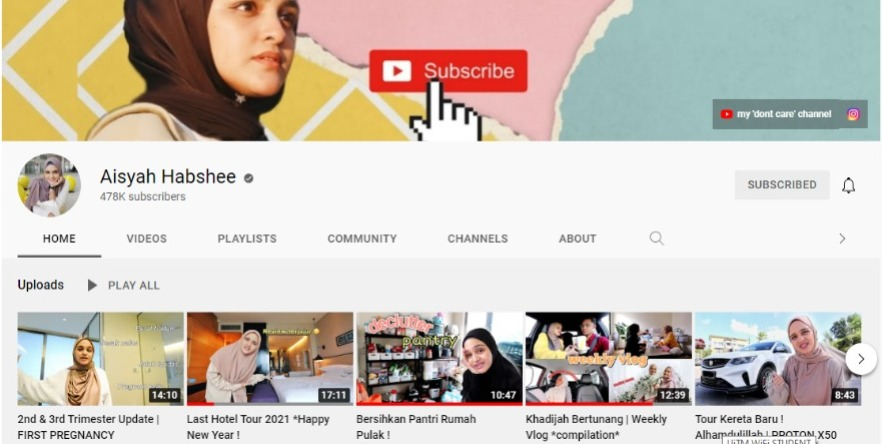
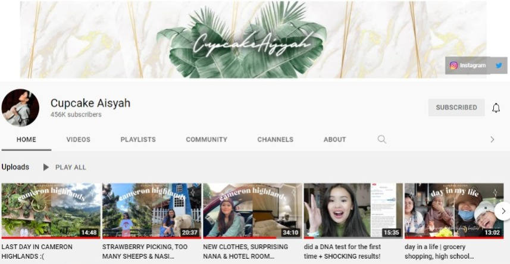
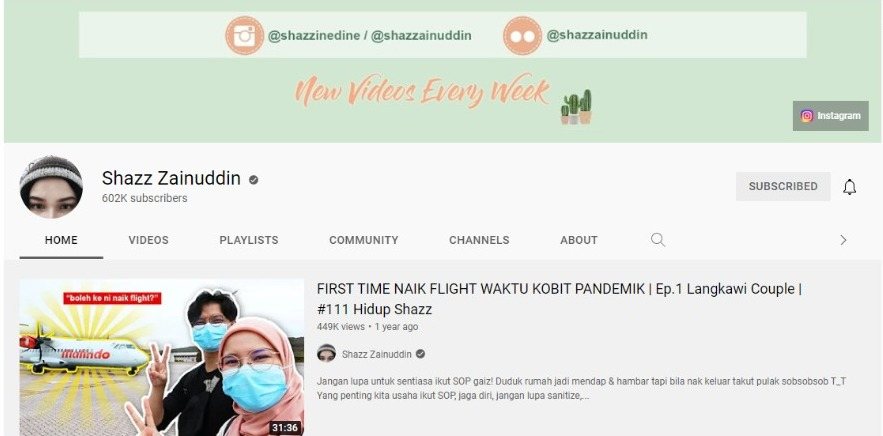
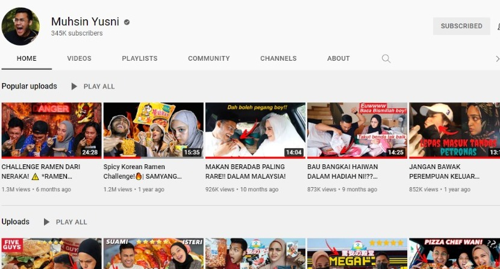
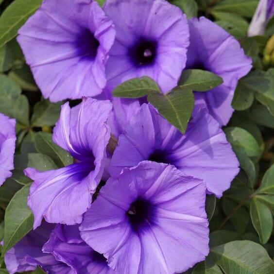
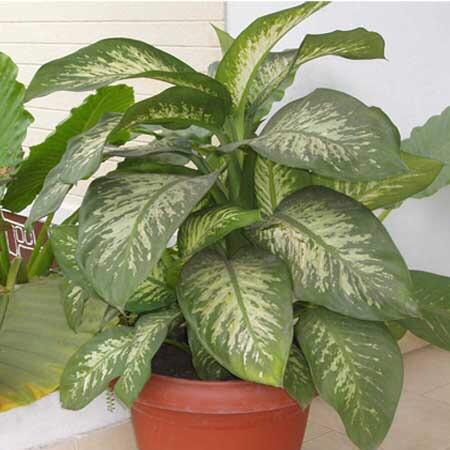
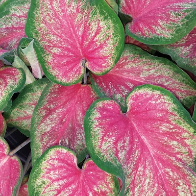

For me hobby is activity I do during my leisure time. So here they are!
✨YouTube is a platform where I attempt to unwind after a long day of studying. It may seem insignificant to others, but it is not so to me. Watching my favourite youtuber videos allows me to forget about my worries or work stress for a brief while. I'll watch YouTube throughout mealtimes and while I'm working on an assignment. However, I enjoy seeing content connected to house cleaning duties in addition to my favourite youtuber life content. The content provides me with satisfaction and motivates me to be a tidy person.
ღ Those are my favourite YouTube channel ღ
 
 
✨Aside from that, I enjoy gardening. It is also one of the treatments for stress relief. Every evening at home, I would go outside and spray all of my mother's flowers, removing any damaged leaves. I also enjoy plucking my father's plants, such as lemon trees. This passion has turned me into a naturalist.
ღ Those are some of my mother's flowers ღ
  